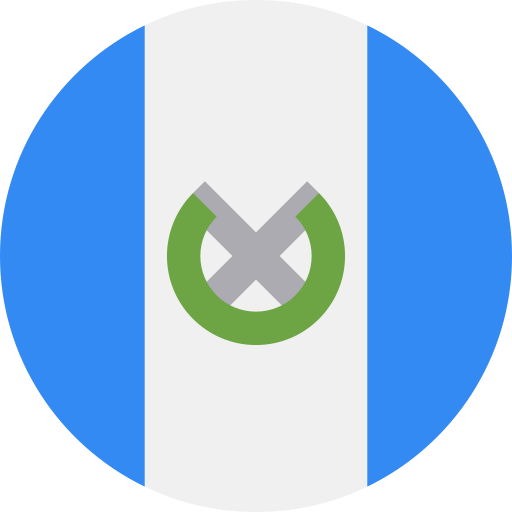
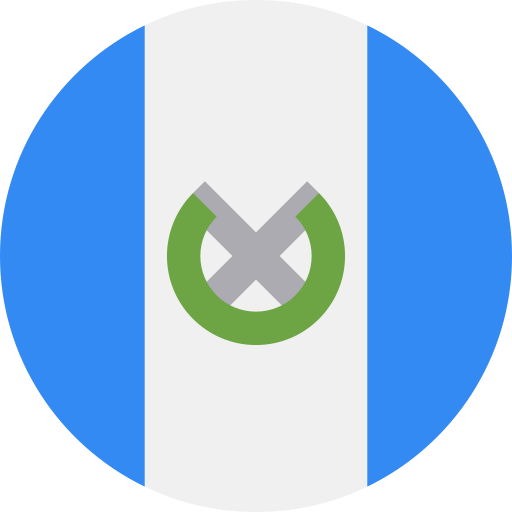
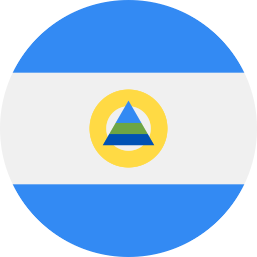
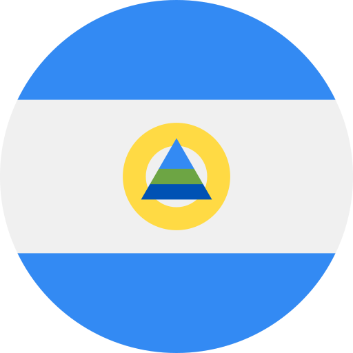

Mundo
Mundo
Novedad
Solo el {{ date.substring(0, date.length - 9) }}
Nuevos {{ newconfirmed }} Confirmados
Nuevos {{ newrecovered }} Recuperados
Nuevos {{ newdeaths }} Muertos
Hasta el {{ date.substring(0, date.length - 9) }}
{{ confirmed }} Confirmados
{{ recovered }} Recuperados
{{ deaths }} Muertos
Paises
Norte America
 Canada
Canada
 Estados Unidos de America
Estados Unidos de America
 Mexico
Centro America

Guatemala
Belice
Mexico
Centro America

Guatemala
Belice
 Honduras

Nicaragua
Honduras

Nicaragua